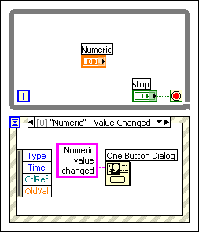
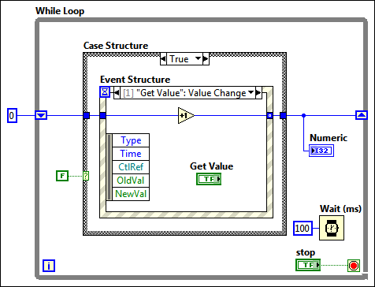

LabVIEW begins queuing events when the VI runs or is reserved to run. The Event structure handles a queued event when data flow allows the structure to execute. Therefore, LabVIEW can generate events before an Event structure is waiting to handle them.
Because LabVIEW queues events for the entire time that a VI is running, LabVIEW can queue events after dataflow causes an Event structure to finish executing. For example, the loop containing the Event structure may terminate while the VI continues to run. To ensure that every queued event is handled, design the VI to finish running soon after the Event structure stops executing.
|
Caution If no Event structure executes promptly to handle an event and front panel locking is enabled, the user interface of the VI may become unresponsive. If this occurs, click the Abort button to stop the VI. You can disable front panel locking by right-clicking the Event structure and removing the checkmark from the Lock front panel until the event case for this event completes checkbox in the Edit Events dialog box. You cannot turn off front panel locking for filter events. |
Place the Event structure in a While Loop that terminates when events can no longer occur. For example, in the following block diagram, the Event structure is outside the While Loop and front panel locking is enabled for the numeric Value Change case.
If you change the value of the numeric control, an event occurs. The Event structure executes once and handles the Value Change event. If you change the value of the numeric control again, another event occurs, and the user interface locks because the front panel locking is enabled. The Event structure already executed once, and because it is not inside a While Loop, it is unable execute again to handle the second event. If you click the stop Boolean control to stop the While Loop and the VI, the VI cannot stop because the block diagram still has not handled the second event, and LabVIEW does not process the event when you click the stop Boolean control until the block diagram handles that event. You can avoid this behavior by placing the Event structure inside the While Loop.
Avoid placing an Event structure within a Case structure. For example, in the following block diagram, the Event structure is inside a Case structure and front panel locking is enabled for the Value Change case.
If you click the Get Value control, the front panel locks indefinitely. The False Boolean constant wired to the Case structure prevents the Event structure from handling the event inside the True case. Because panel locking is enabled for the event, the front panel waits for the Event structure, but dataflow prevents the Event structure from executing to handle the event. If you disable front panel locking for this application and click the Get Value control, the front panel becomes responsive and completes when you press the stop button. However, the numeric value does not increment because the Event structure still cannot execute to handle the event.